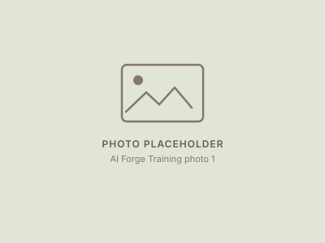
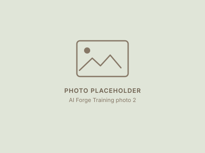

Back to Experience

AI Forge Training
AI Forge Training is a Boeing-funded programme run by WorldLearning Algeria at the Algiers STEM Center, pairing participants with mentors from research labs and technology companies on applied AI projects.
I collaborated with a multidisciplinary team to develop an AI model addressing aviation-related challenges, alongside a series of conferences hosted by Microsoft AI for Good, INRIA and InstaDeep.
Photos

